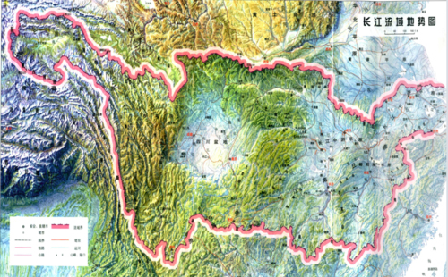
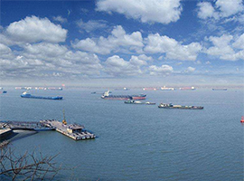
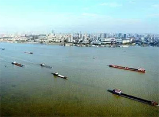

流域分段
沱沱河，长江发源地，山高岸险，终年积雪数十米深，全长374公里。
当曲口以下至青海玉树县境内的巴圹河口，称通天河，全长815公里。水势平缓，河谷宽阔，而多沼泽，日照充足，草滩密茂，两岸峰高雪深，景色壮丽、宜人，是长江流域重要畜牧区。
巴圹河口至四川宜宾的岷江口，称金沙江，全长2308公里，因产黄金而得名。明末宋应星著《天工开物》一书中记载：金沙江，（古名丽水），回环五百余公里，出金有数载，金沙江河段山高谷深，水流湍急，水面比降大，总落约三千米。险峻的虎跳峡，河段只有16公里长，而水面落差达200米，平均落差为12.5‰，可见蕴藏的水利资源是何等的丰富。

长江流域地势图（来源：《长江志 水系》
宜宾的岷江至长江的吴淞口全长2803公里，其中宜宾至湖北的宜昌，全长1030公里，又称川江，湖北的枝江至湖南的城陵矶全长340公里，又称荆江，荆江又有上、下荆江之分。上荆江：枝江至藕池口全长160公里。下荆江：藕池口到湖南的城陵矶全长180公里。
江苏以下江段又称扬子江。江阴以下河段江面逐步开阔，向入海口呈喇形状开展，江阴附近水面宽仅一公里，而到入海口附近时江面宽达80公里，有些学者认为，距今六千年以前，长江大致是在扬州、镇江一带入海，由于江面宽阔，坡度平缓，江流海潮交会，大量泥砂因流速缓慢和海水盐分凝聚而成集，江口内外悬移质日日向下沉垫，河底推移质年年向外推动，以致发育成了长江三角洲。江口的崇明岛，就是由长江泥砂堆集而成。这个岛的出现，距今只有一千多年的历史，崇明岛的南端的黄浦江，是长江的最后一条支流。

长江